왜 내 것만 구려 보일까요?
영상은 같은 소재를 두 번 잘라서 시작해요. 왼쪽은 망토 두른 주인공을 화면 한가운데에 크게 둔 장면이고, 오른쪽은 같은 주인공을 절벽 끝에 작게 두고 앞쪽 하늘을 넓게 비운 장면이에요.
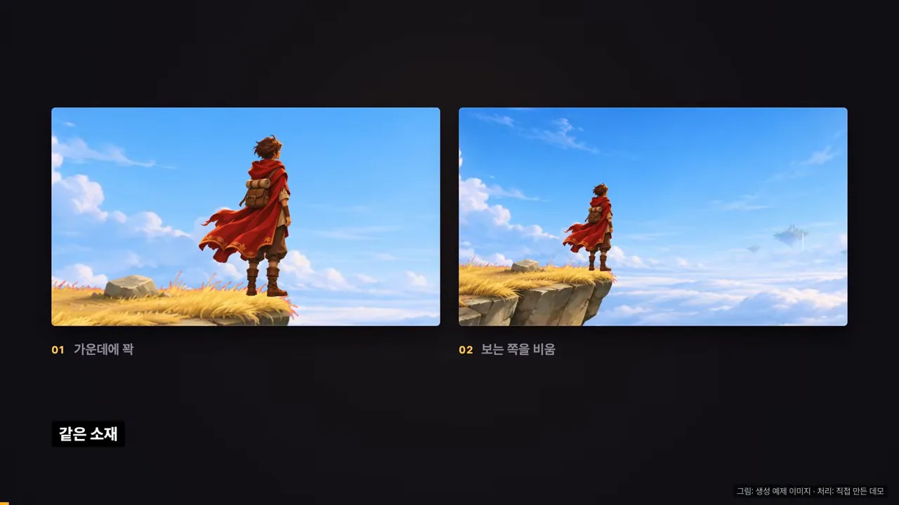
공식보다 훈련이에요
좋아 보이는 데에 황금비 같은 비밀 공식이 있을 것 같지만, 사람들이 황금비를 더 좋아하는지 따져 본 실험들은 결과가 애매했어요. 영상이 근거로 드는 건 다른 실험이에요. 여러 화가의 그림을 섞어서 본 사람들이 한 화가씩 몰아서 본 사람들보다 처음 보는 그림의 화가를 더 잘 맞혔어요. 화면 오른쪽이 그 논문 초록이고, 빨간 상자가 'Surprisingly, induction profited'(놀랍게도 섞어 본 쪽이 더 잘 배웠다) 부분이에요.
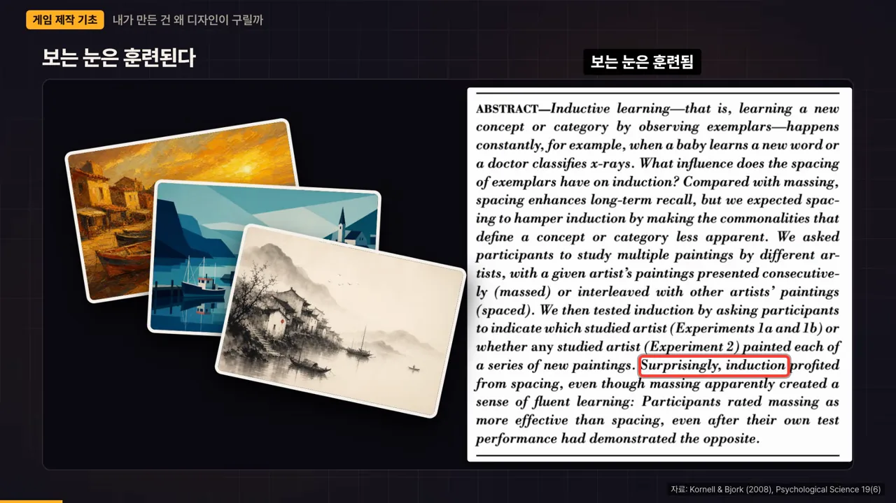
익숙함에 새로움 하나
취향의 재료는 내가 자주 본 것들이에요. 사람은 자주 본 것을 좋아하게 되는데, 이걸 단순 노출 효과라고 해요. 글자, 그림, 얼굴, 소리에서 모두 확인됐어요. 다만 익숙하기만 하면 지루해요. 산업 디자인 연구는 익숙함과 새로움이 함께 선호를 정한다고 봤어요.
영상은 이걸 칼 세 자루로 보여 줘요. 맨 위는 흔한 칼, 가운데 노란 테두리 칼은 '익숙함 + 새로움 하나', 맨 아래는 촉수처럼 꼬인 너무 낯선 칼이에요. 오른쪽 곡선은 새로움이 커질수록 좋아 보이는 정도가 올랐다가 다시 떨어지는 모양이고, 꼭대기 점이 가운데 칼이에요.
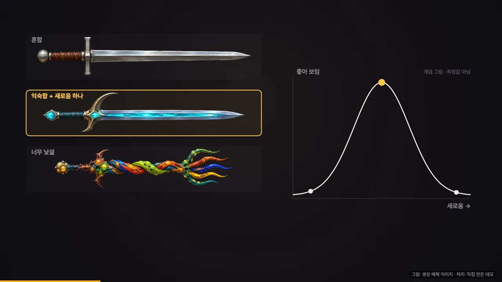
눈이 손보다 먼저 자라요
결국 감각은 내 안에 쌓인 기준이에요. 많이 본 사람은 기준이 높아서 자기 작품이 먼저 구려 보여요. 방송인 아이라 글래스는 이걸 취향과 실력 사이의 틈이라고 했어요. 아래 그래프에서 노란 선이 '보는 눈', 흰 선이 '만드는 실력'이고, 가로축은 만든 횟수예요. 두 선 사이의 노란 면이 틈이고, 오른쪽 끝에서 두 선이 만나요.
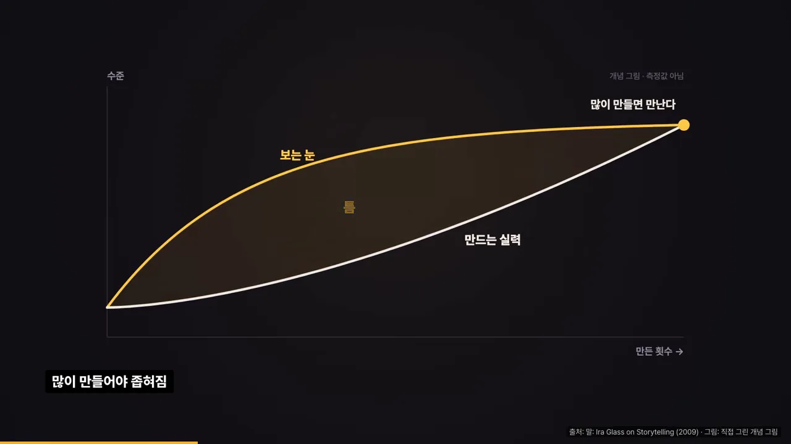
색보다 밝기가 먼저예요
색을 잘 쓴 그림은 흑백으로 바꿔도 잘 읽혀요. 영상은 노을 진 마을 그림을 세 장으로 떼어 보여 줘요. 01은 밝은 하늘, 02는 중간 밝기의 골짜기, 03은 어두운 앞 나무예요.
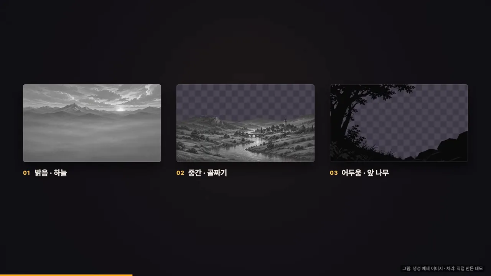
색만 바꾸면 무엇이 무너질까요
같은 세 장을 색만 마구 바꿔 다시 겹치면 어떻게 될까요? 아래 화면 왼쪽(01)은 세 겹이 또렷한 원래 그림, 오른쪽(02)은 색만 마구 바꾼 그림을 흑백으로 바꾼 거예요. 그림 아래 막대는 밝기가 어디에 몰렸는지 보여 주는데, 왼쪽은 어두운 쪽부터 밝은 쪽까지 넓게 퍼져 있고 오른쪽은 가운데에 뾰족하게 몰려 있어요. 밝기 퍼짐 값도 61 대 25로 적혀 있어요.
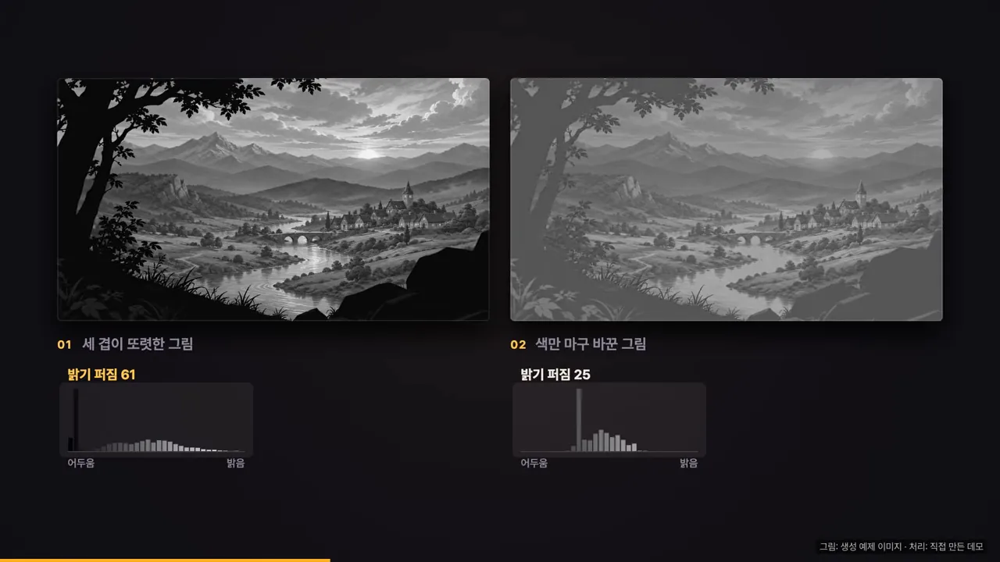
눈이 어디부터 가는지는 실눈을 뜨면 보여요. 잔 무늬가 사라지고 큰 밝기 덩어리만 남거든요. 영상은 그림을 흐리게 한 뒤 가장 밝은 15%만 남겨요. 남는 건 해가 지는 하늘과 빛나는 강줄기예요.
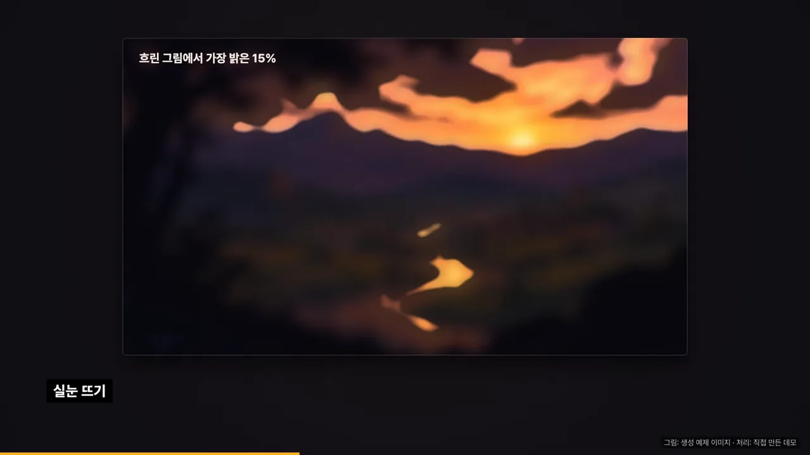
색은 좋아하는 장면에서 빌려요
좋아하는 색에도 이유가 있어요. 그 색을 떠올리게 하는 것들이 좋으면 색도 좋아진다는 이론이 있어요. 영상의 예로, 버클리 학생들은 라이벌 스탠퍼드 학생들보다 버클리 학교 색을 더 좋아했어요. 그러니 좋은 색 조합은 사람들이 이미 좋아하는 장면에서 빌려 오면 돼요.
영상은 노을 진 항구 사진에서 가장 많이 쓰인 다섯 색을 뽑아 오른쪽에 색 코드와 넓이를 적어 둬요. 사진 아래 가로 막대가 그 넓이 비율이에요.
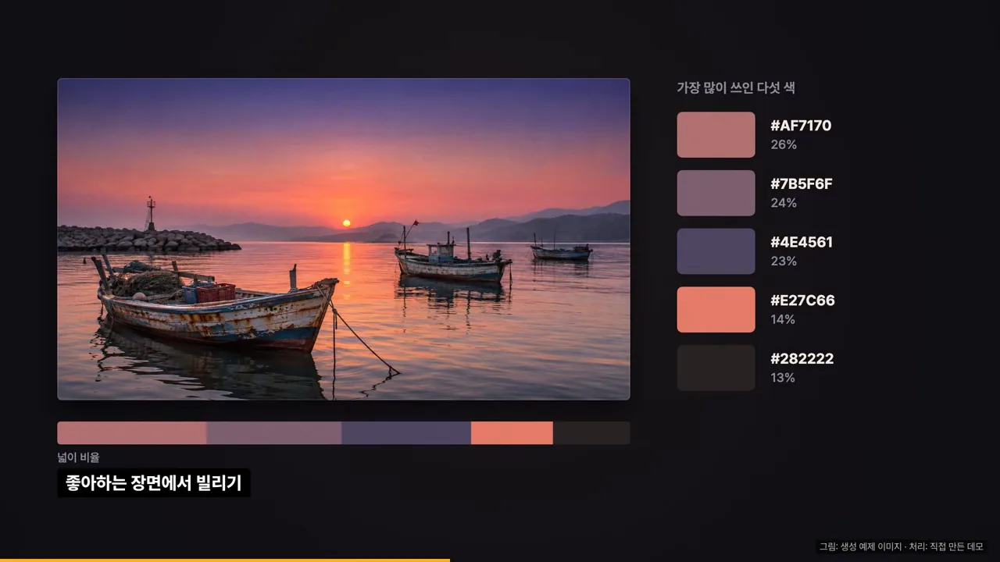
| 색 | 색 코드 | 넓이 |
|---|---|---|
| 장밋빛 | #AF7170 | 26% |
| 보랏빛 | #7B5F6F | 24% |
| 어두운 남보라 | #4E4561 | 23% |
| 밝은 산호색 | #E27C66 | 14% |
| 검정 | #282222 | 13% |
세 색이 비슷하게 넓게 깔리고, 밝은 산호색과 검정은 조금만 들어가요. 이 다섯 색을 아까 색만 마구 바꾼 그림(01)에 밝기 순서대로 다시 입힌 게 오른쪽(02)이에요. 그림 아래 막대가 어두운 색부터 밝은 색 순서로 놓인 다섯 색이에요.
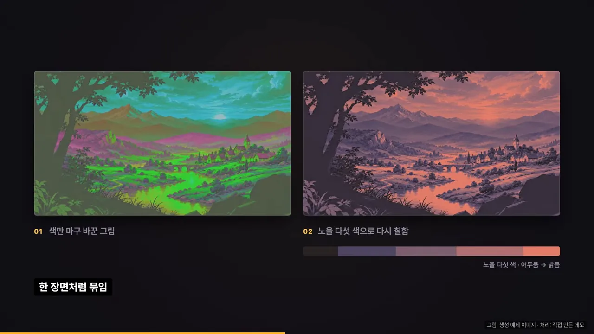
게임 밖도 같아요. 영상은 카페 실내 사진과 파스타 사진의 다섯 색 비율을 막대로 보여 줘요. 카페는 32·25·22%짜리 차분한 나무색이 넓게 깔리고, 파스타 쪽도 27·24·24%가 바탕이에요. 맨 오른쪽의 작은 칸(6%, 9%)이 눈에 띄는 색이에요.
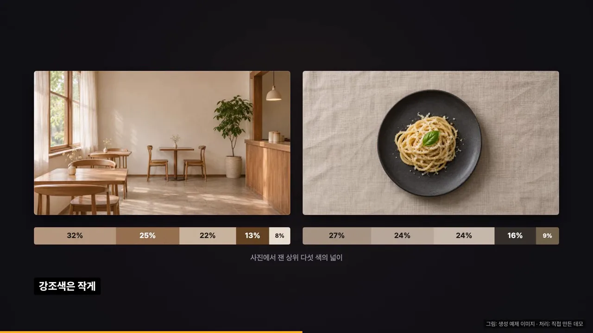
모양은 먼저 읽히고, 유행은 돌아와요
캐릭터는 색보다 모양이 먼저 읽혀요. 아래 화면의 세 캐릭터에는 노란 도형이 겹쳐 그려져 있어요. 왼쪽은 동그라미(순함), 가운데는 네모(든든함), 오른쪽은 세모(날카로움)예요. 아래쪽에 왼쪽은 '착한 편', 오른쪽은 '악당'이라고 붙어 있어요.
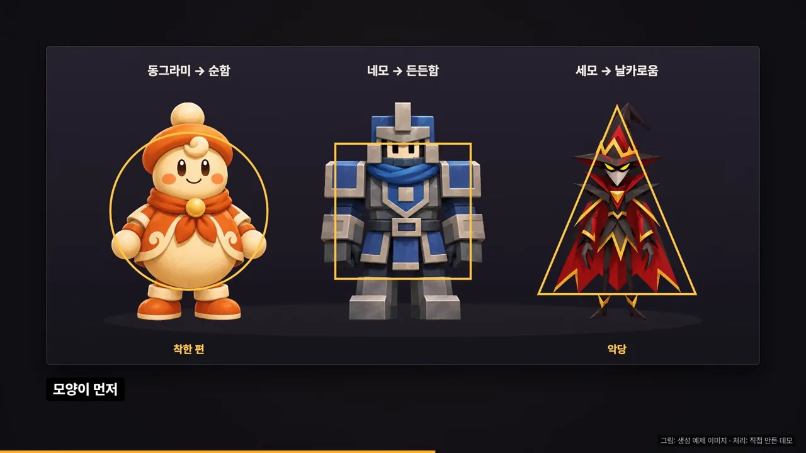
모양이 잘 잡혔는지는 까맣게 칠해 보면 알아요. 화면 위 줄이 실루엣, 아래 줄이 원래 캐릭터를 작게 줄인 거예요. 실루엣만 봐도 셋이 누군지 갈려요.
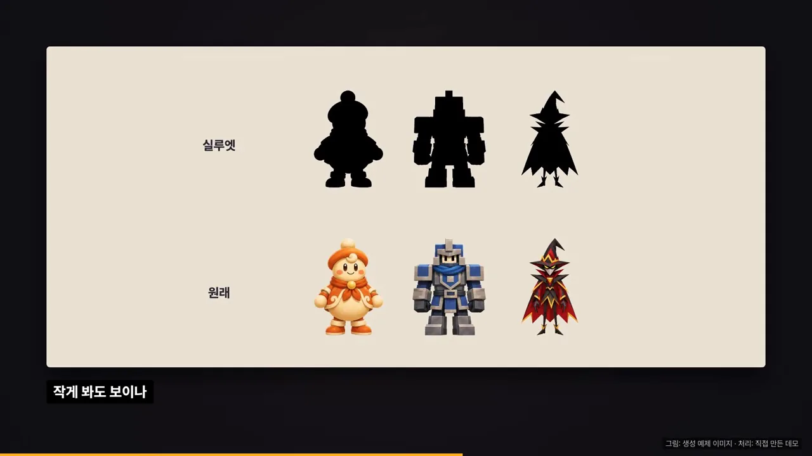
유행에도 시간표가 있어요
패션 역사가 제임스 레이버는 1937년에 유행의 시간표를 내놨어요. 영상 슬라이드는 1920년대, 1970년대, 2000년대 옷차림 옆에 레이버의 표를 영어 원문 그대로 띄우고, 말하는 단계마다 빨간 상자를 옮겨요.
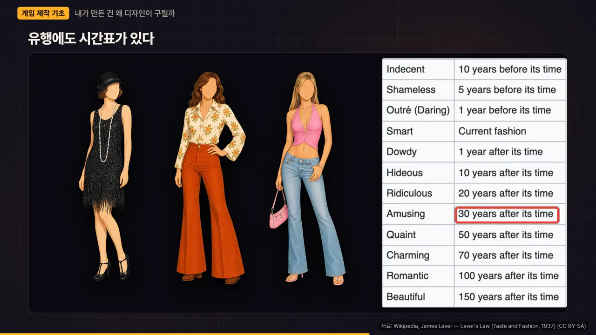
영상이 말로 짚은 다섯 단계만 한 줄로 옮기면 이래요. 같은 옷이 시간에 따라 망측했다가, 세련됐다가, 흉했다가, 다시 좋게 보여요.
게임 아이콘으로 보면 회복 물약 아이콘이 1990년대 도트, 2000년대 후반 반짝이는 유리 광택, 2010년대 납작한 도형, 2020년대 말랑한 3D로 바뀌어 왔어요. 화면 아래 점선 화살표는 2020년대에서 다시 1990년대 도트로 돌아가요.
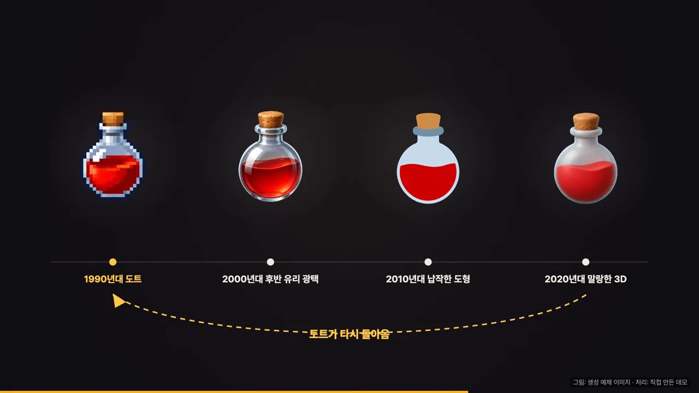
자르는 자리와 한 화면 고치기
같은 그림도 어디서 자르느냐로 달라져요. 사람을 한가운데 크게 두면 증명사진처럼 멈춰 보여요. 아래 화면은 화면을 가로세로 세 칸씩 나눈 점선을 그어 두고, 주인공을 왼쪽 세로선 위에 세운 뒤 주인공이 바라보는 오른쪽 하늘을 밝게 표시했어요.
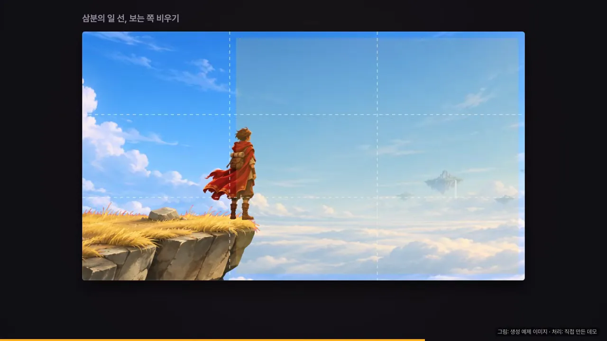
게임 화면 한 장 고치기
이제 영상은 지금까지 본 걸 게임 화면 한 장에 모아요. 재료는 왼쪽의 층 네 장(하늘, 먼 숲, 가까운 숲, 땅)과 오른쪽의 조각 여섯 개(주인공, 등불, 상자, 버섯, 표지판, 모닥불)가 전부예요.
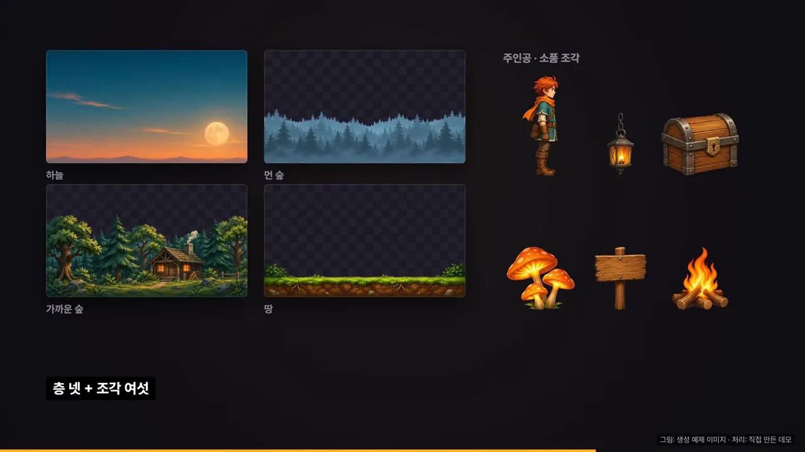
처음 시안은 주황 하늘, 파랑·보라 나무, 초록 집과 상자, 분홍 땅이 모두 비슷하게 강해요. 색은 많은데 어디를 볼지 몰라요.
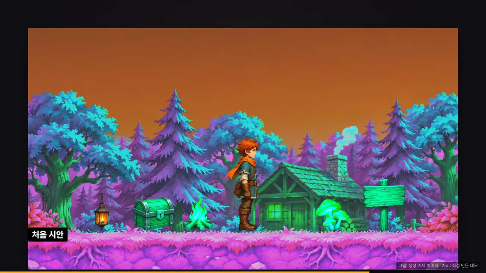
여기에 영상 화면 오른쪽 위 버튼 네 개(밝기, 색, 구도, 조절) 순서대로 손을 대요.
- 밝기 — 먼 숲은 밝고 흐리게, 땅은 어둡게 나눠요.
- 색 — 하늘과 그림자는 차갑게, 불빛은 따뜻하게 칠해요.
- 구도 — 주인공을 삼분의 일 선에 세우고, 가는 쪽을 비워요.
- 조절 — 안개와 가장자리 그늘로 주인공과 불빛에만 눈이 가게 해요.
네 단계를 마친 화면이 아래예요. 푸른 밤하늘 아래 숲은 어둡게 가라앉고, 모닥불과 오두막 창문만 따뜻하게 빛나요. 주인공은 왼쪽 삼분의 일 자리에 서서 오른쪽을 바라보고, 가장자리는 그늘로 어두워졌어요.
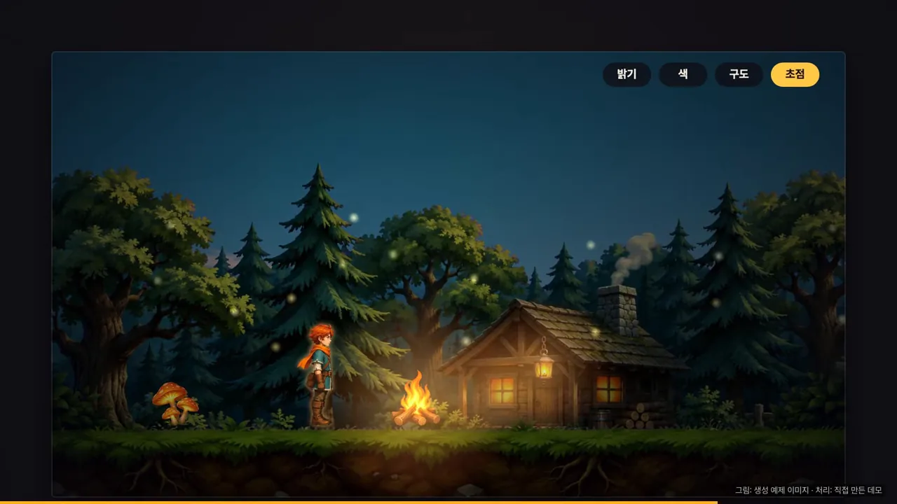
글자판도 같아요. 처음 '스테이지 클리어' 창은 보라 바탕에 글자 크기와 줄이 들쭉날쭉했어요. 정렬, 간격, 크기, 색, 글꼴 다섯 가지만 차례로 고치면 아래처럼 나무 테두리 창에 점수가 크게 읽히는 창이 돼요.
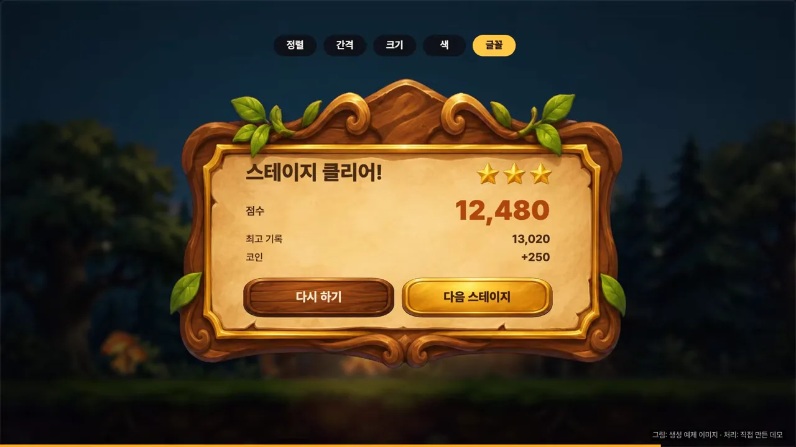
보는 눈을 키우는 법
영상은 처음 본 실험으로 돌아가요. 레퍼런스는 섞어서 봐요. 아래 화면은 같은 바닷가 마을을 01 두꺼운 붓, 02 납작한 도형, 03 먹과 여백으로 다르게 그린 세 장이에요.
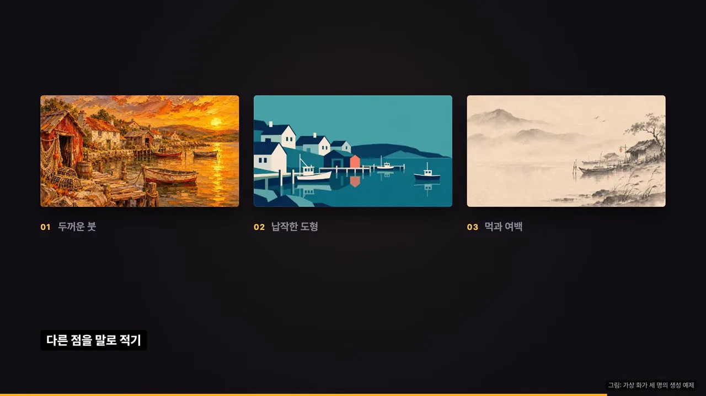
한 작가만 몰아서 보면 다 좋아 보이지만, 섞어 보면 각자의 규칙이 드러나요.
따라 만들고 원본과 비교하기
따라 만들기도 오래된 방법이에요. 화면 오른쪽은 벤저민 프랭클린 자서전의 한 대목이에요. 빨간 상자 안에 '내가 쓴 Spectator 글을 원문과 비교해 잘못을 찾아 고쳤다'는 문장이 있어요.
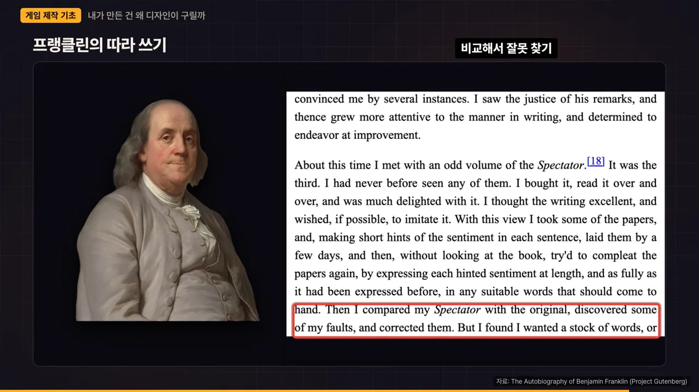
보는 눈 체크리스트
영상은 오늘 본 걸 한 장으로 정리해요. 그림을 만든 뒤 여덟 칸을 하나씩 확인하라는 체크리스트예요.
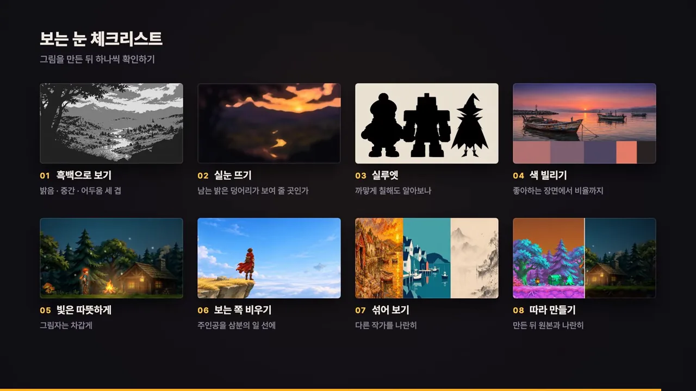
- 흑백으로 보기 — 밝음·중간·어두움 세 겹이 보이나요?
- 실눈 뜨기 — 남는 밝은 덩어리가 보여 줄 곳인가요?
- 실루엣 — 까맣게 칠해도 누군지 알아보나요?
- 색 빌리기 — 좋아하는 장면에서 색과 비율을 빌렸나요?
- 빛은 따뜻하게 — 그림자는 차갑게, 불빛은 따뜻하게 칠했나요?
- 보는 쪽 비우기 — 주인공을 삼분의 일 선에 두고 앞을 비웠나요?
- 섞어 보기 — 다른 작가를 나란히 두고 차이를 적었나요?
- 따라 만들기 — 만든 뒤 원본과 나란히 놓았나요?
마지막 당부는 단순해요. 하루에 하나씩, 좋아 보이는 것과 그 이유를 한 줄로 모아 보는 거예요. 구리다고 느낀 그 눈이 이미 출발점이에요.